From a shared answer machine to a personalized school —
and from a tool students used alone to a place where someone else is there.
Bella (Yuanyuan) Li · Product Designer · Aug 2024 – present
Layer one is the core — photo-solving, where every student starts. This is what it looked like: one long block of text. Easy to copy, hard to learn anything from, and a toolbar of features sitting inside the chat. [space]
We built two versions. Plan A keeps the answer on top with the working underneath. Plan B leads with the approach and puts the answer right below it, with each step opening on tap. [space]
We wanted Plan B, because we wanted students to actually learn something. But speed was our moat — a student at eleven at night wants the answer now, and putting anything above it is a risk. So we A/B tested, and there was no drop: the approach block is short, so the answer is still one glance away. That's the trade we made — a second of attention, for a reason to read. And on the right you can see what else changed: one clean chat, the tools moved into a sidebar, and every answer now opening a next step.
The product
Scan any problem, learn from the answer.
Answer.AI is an AI learning app: students photograph a homework
problem and get an instant, step-by-step solution.
7 million students. I led the app's full redesign, from
direction to ship.
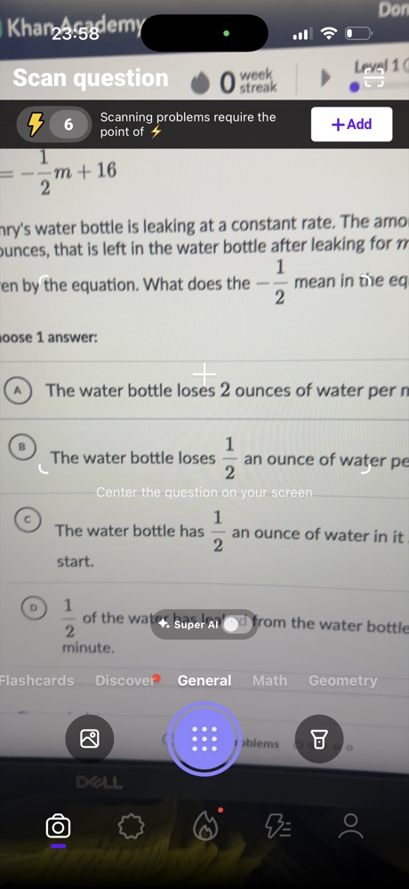
Step 01 Scan the question
→
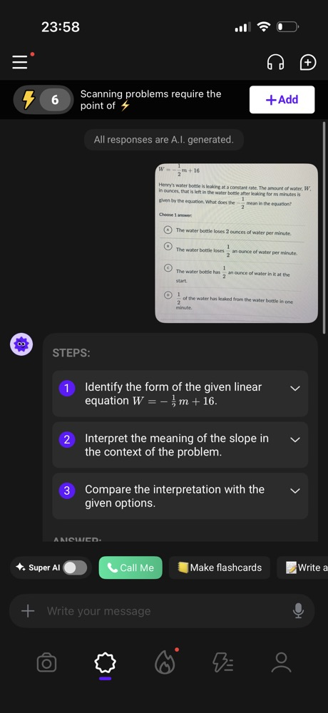
Step 02 Step-by-step answer
To start with the product itself: the core loop is really simple. You scan a problem, and you get a step-by-step answer. That's what students came to us for, and for a while, that was genuinely enough.
The users
Seven million Gen Z students.
5M
High school
2M
College
They're working for the grade: tonight's homework, Friday's test,
the GPA that decides which school they get into — and most
of them are in mid-American towns, where that kind of help
is expensive or far away.
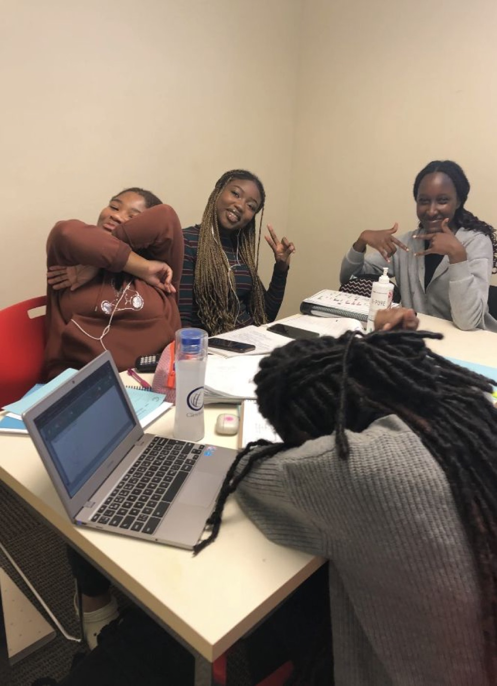
“I'm stuck.”→“I need an answer now.”→“Don't make me type it out.”→“Show me how to write each step.”“Didn't get it? Let me keep asking.”
Our users are seven million Gen Z students — about five million in high school and two million in college. Most of them are in mid-American towns, where instant help was either expensive or far away. And what they're facing is always the same: tonight's homework, Friday's test, and the GPA that decides where they get in. So their typical flow is simple: I'm stuck on this one, I snap a photo, I get the answer — and if I still don't get it, I ask a follow-up.
The honeymoon · 2023 — 2024
We landed in a golden window.
Free chatbots couldn't take a photo yet — GPT-4o only opened image and
file upload to free users in May 2024, with caps. Snap a
problem, get the steps: we owned that moment, and so did
Question AI and Gauth — all of us in the App Store top 15.
Curve illustrative · milestones are real
So here's how it started. You might be wondering — how does a photo-solving app get that many users? Well, it's because in 2023 we landed in a golden window. Back then, the free chatbots couldn't read a photo yet — GPT-4o only opened image upload to free users in May 2024. So if you could snap a problem and get the steps, you owned that moment. We did, and so did Question AI and Gauth, and all of us were sitting in the App Store top fifteen. By September we'd hit six million users.
The turn · late 2024
Growth began to slow.
The capability that opened the market became table stakes — and our
one-and-done loop gave students little reason to return.
Retention slipped with it.
Outside
Multimodal AI went mainstream
Free ChatGPT could read photos by May 2024.
Outside
Free alternatives multiplied
The same camera-first loop, for free.
Inside
The loop ended at the answer
Acquisition, but no learning habit.
And then, look at the tail — the curve bent. What happened is that free ChatGPT could read photos now, competitors like Gauth started giving away free credits, and on our side, our loop ended at the answer. So we had acquisition, but no habit, and retention slipped with it.
The diagnosis
Fewer students chose us. Most left after one answer.
Scan & Solve was no longer unique. Students got what they needed
quickly, but rarely stayed long enough to build a habit with Answer.AI.
So that was our challenge, in one line: scan-and-solve alone wasn't enough anymore. We had to change something — and to figure out what, we went back to the students.
Discovery · Three credible paths
Students wanted more from us — in three different directions.
13 student interviews — 8 online, 5 in person — surfaced three
unmet needs. Market research showed each had real commercial potential.
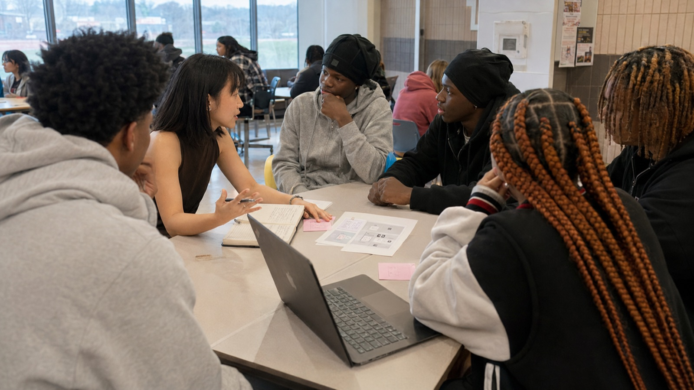
In person · 5 of 13 interviews
01 · SAT / ACT prep
“The SAT is in March and I have no idea if I'm on track.”
Maya · 11th grade
High intentSeasonal
Commercial proof
$10M ARR
Acely, AI SAT & ACT prep — launched Jan 2024, 10-person team
An AI-native peer proved students pay $49–149 a month for scores.
02 · College admissions
“I'm the first in my family to apply to college, and the school counselor is hard to get.”
Jordan · 12th grade
High valueEpisodic
Commercial proof
$30K+
Crimson's starting price; valued near $600M in 2024
Smaller audience, exceptionally high value per student.
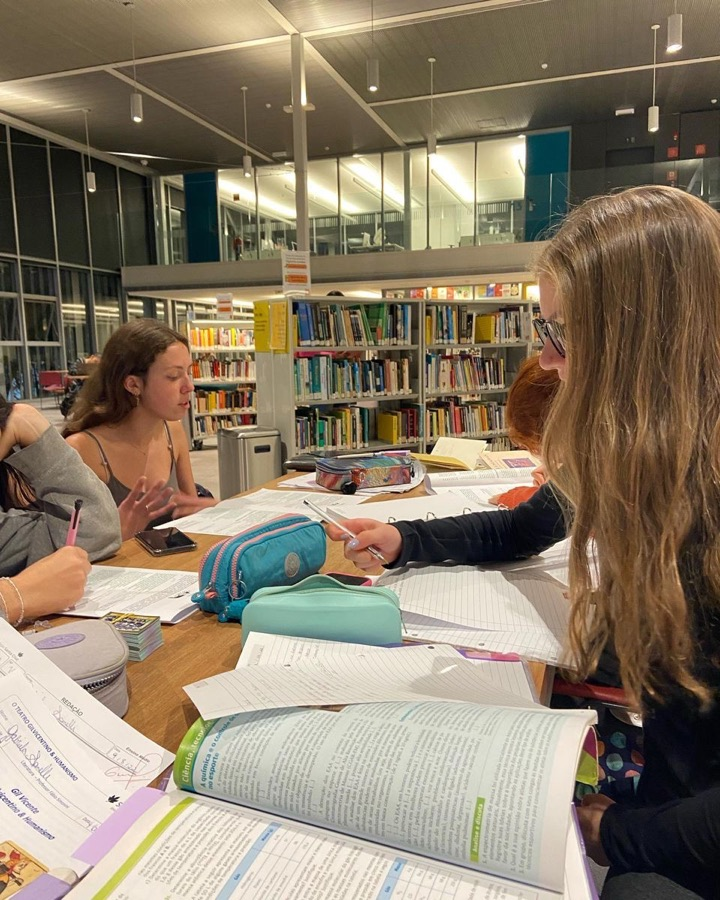
03 · Daily learning
“I got the answer, but I still can't do the next one.”
Sam · College freshman
Broad reachYear-round
Commercial proof
60M+
Quizlet monthly learners — 2 in 3 US high schoolers use it; valued at $1B
Everyday studying is already a habit at scale.
All three needs were real. None was an obvious answer.
So the first thing we did was go back to students. We did thirteen interviews with our users. [space] And out of those, we could see three directions. The first was SAT and ACT prep — the big tests.The second was college admissions — a lot of our students are first-generation college applicants, the school counselor is basically never available, and their parents can't really help.And the third was daily learning — the everyday need every student still has.[hover a card] And each of these had real commercial proof behind it — Acely, Crimson, Quizlet. So all three were real opportunities, and now it was on me and the product team to decide the direction and the priority.
Prioritization · Strategy + behavior
Interest revealed the options. Evidence set the priority.
I paired a strategic opportunity assessment with two lightweight probes shipped inside the product.
Could this direction strengthen the business we already had?
Test prep
Admissions
Daily learning
Fixes our current growth problem
Partial
Weak
Strong
Reaches existing users
Some, seasonal
Few, low-frequency
Broad, year-round
Builds on our right to win
Needs a new content system
Needs new expertise & trust
Extends our existing entry point
Keeps college students included
High school only
High school only
Every grade, all 7M
Two weeks, two quick probes, 20% of users across grades. Students kept solving with the core loop far more than they touched either probe.
Hover a row for the reasoning.
I looked at it through two lenses. The first is strategic fit. I set up four questions and ran all three directions through them: does it fix our growth problem, does it reach the users we already have, does it build on our right to win, and does it keep all students in the picture. That last one is something I brought up myself — exam prep and admissions would read as "not for me" to two million college users, and I didn't want to lose them. And when you lay it all out, daily learning is the only one that clears every bar. [space → tab 2]
But I didn't want to decide on a matrix alone, so the second lens is behavior. I proposed two lightweight probes, to twenty percent of users, over two weeks. [hover]The AP prep demo got some real interest, but only four percent of students finished it.The Counselor and Scholar tutors got decent taps, but almost nobody came back.And for daily learning, I could already see it in the data: ninety-eight percent of students were using Scan to Learn, and fifty-six percent were asking a follow-up. So the way I read it: the behavior was already there. What was missing was the loop.
The decision
Daily learning became our first priority.
It was the most frequent need, closest to existing user behavior, and the strongest foundation for future growth.
The goal was to move from solving one question to supporting how students learn every day.
That's how daily learning became our first priority. It was the most frequent need, it was closest to what students were already doing, and it was the strongest foundation for everything else we might build later. [space] So we wrote the goal down in one sentence: move from solving one question to supporting how students learn every day. And everything I'm about to show you serves that sentence.
The strategy
To make daily learning work, we built from the core outward.
From a shared answer machine to a school that knows each student.
04
Personal·Streaks plus proactive agents.A school that remembers you and reaches out.
03
Reach·Rebuild the IP system.Change what students think the product is.
02
Stay·Flashcards, study rooms, mock practice.Turn a quick tool into a long-term study partner.
01
Core·Redesign Ask AI: clearer explanations, more agents, voice.The front door. If explanations are not clearly better, nothing else matters.
Each layer stands on the one below.Sharpen the core, build reasons to stay, reach more students, and make it personal.
To make daily learning actually work, I proposed this strategy to the team — basically going from a shared answer machine to a school that knows each student. There are four layers here, and each one stands on the one below it. [hover the rows]The core is about making the answer worth learning from.Stay is about giving students reasons to come back.Reach is about telling people we're not just an answer tool anymore.And Personal is gradually building a school that remembers each student. So next, I'll go through them one by one and show you what we designed at each layer.
Layer 01 · Core
Make the answer worth learning from.
Two bets: explanations you can learn from, in a chat
calm enough to think in.
Before One long block. Easy to copy, hard to learn from. A toolbar of features inside the chat.
Two ways to show it Plan A keeps the answer on top, working below. Plan B leads with the approach and puts the answer right under it, each step on tap.
The trade-off
Speed was the moat. We put the thinking above the answer anyway — and A/B tested it.
No drop. The approach block is short, so the answer stays one glance away. Plan B shipped.
Before
Plan A 稿子位 answer on top
Plan A · answer on top
Plan B · approach first
Layer one is the core, and this is the front door. This is the old Ask AI, where students landed after scanning a problem — one long block of text, easy to copy, but hard to learn from. [space]
So I made some changes. [hover the dots]First, I made the explanations something students can actually learn from: they see the steps first, and the copy-paste-able worked solution is tucked behind an expand arrow. That's how a teacher would teach it — by the time they get to the answer, they've already picked up how to solve it, almost without noticing.And second, every answer now opens a next step — similar questions, a video explanation, the concept behind it — so one problem turns into real understanding and practice of that concept. Because if the knowledge behind the answer isn't clear, nothing else on top of it matters.
Layer 02 · Stay
Give students a reason to come back tomorrow.
We kept only the methods with proven demand — and the one that surprised us
had nothing to do with studying better. It was company.
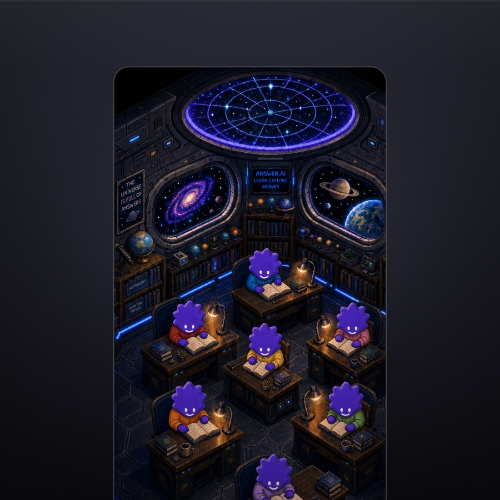
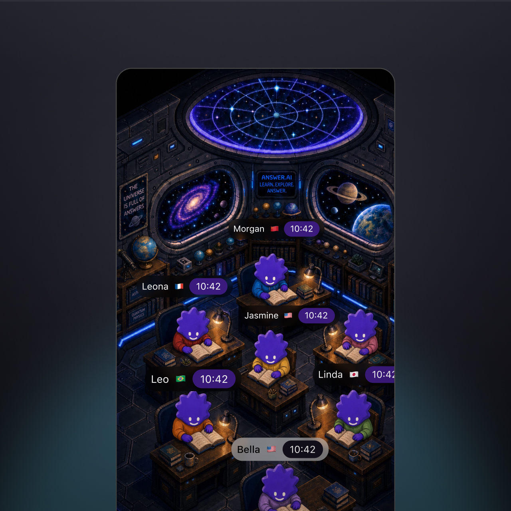
Why this? ↗
Study rooms
Company while you work, not another feed
Launched Jul 2026 · 8 weeks in
+28%avg. time in app for students who join rooms
5.5 hrslongest focus streak — one student, one sitting
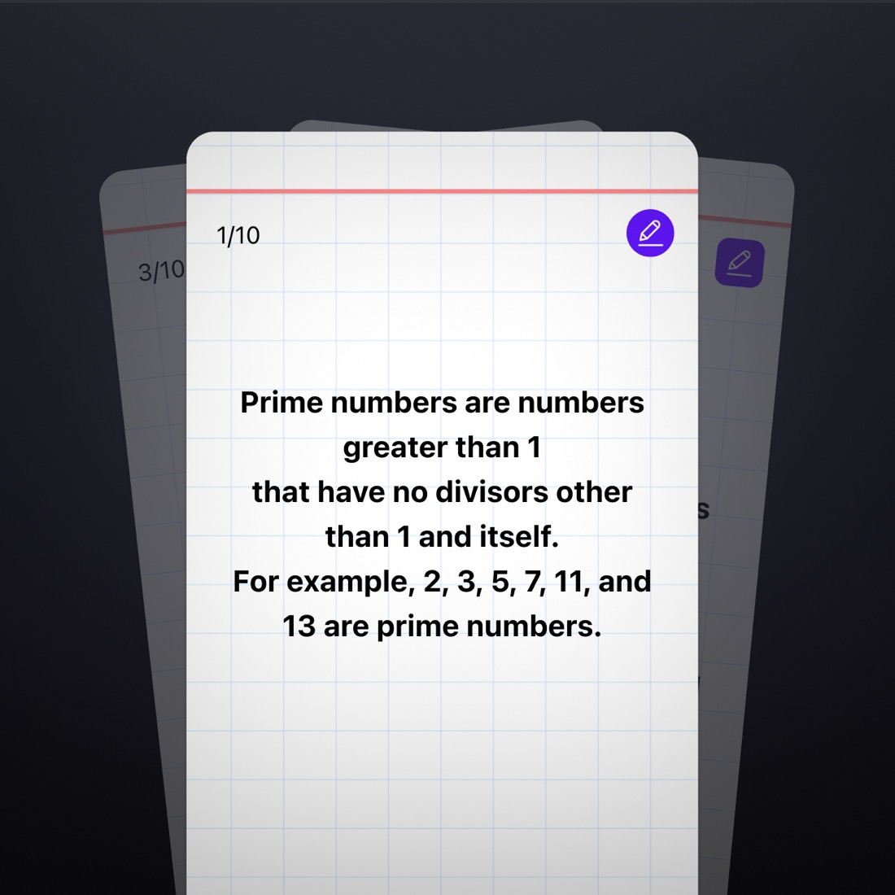
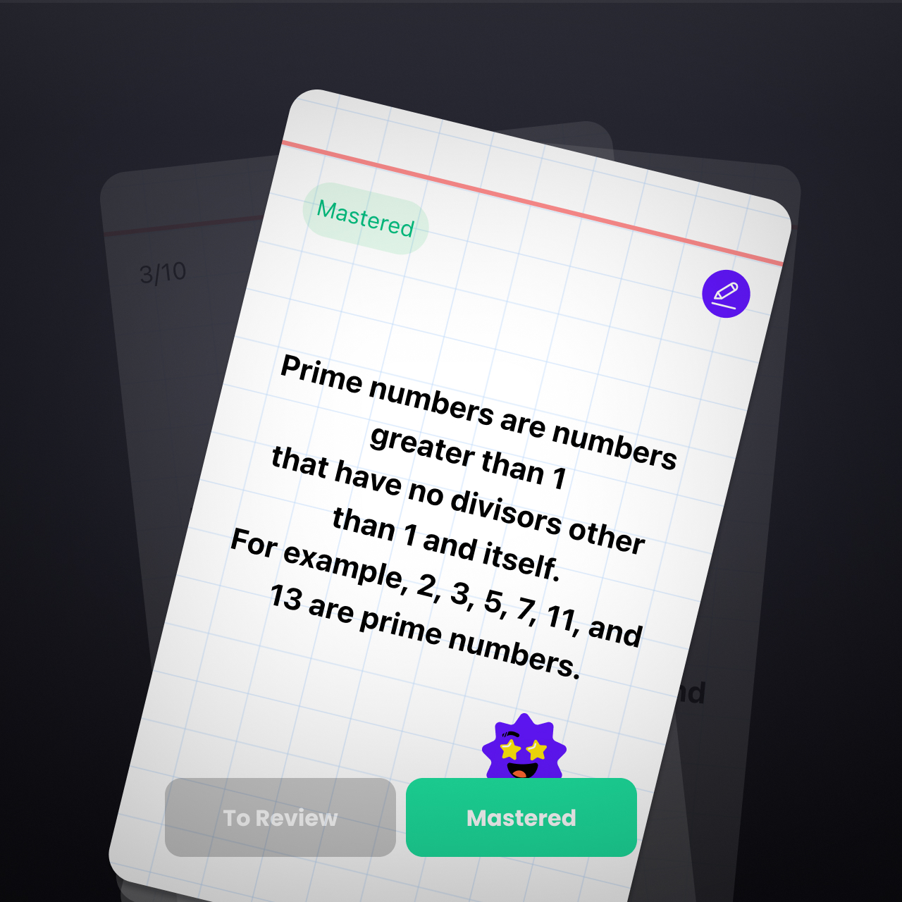
Flashcards
Daily memory, built from what you studied
Launched Nov 2024 · v2 May 2026
+11%D7 retention for students who build a deck in week one
2.1×decks created after v2 auto-built them from solved problems
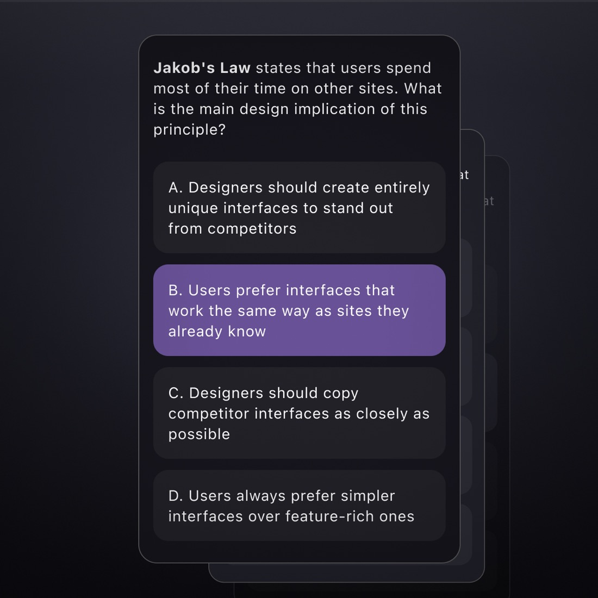
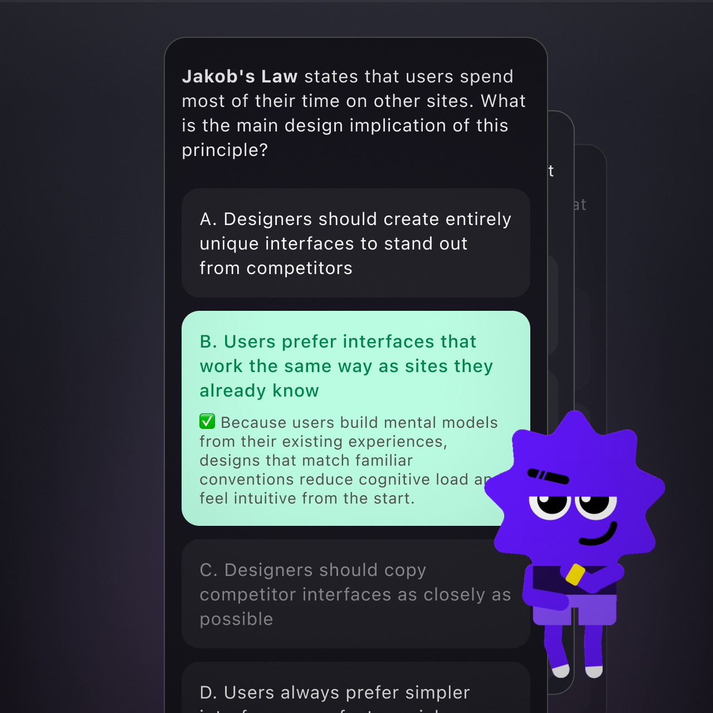
Mock tests
The hard-demand moment before every exam
Launched Feb 2025
+38%sessions per student in exam weeks
2.4×Pro conversion among students who take a mock test
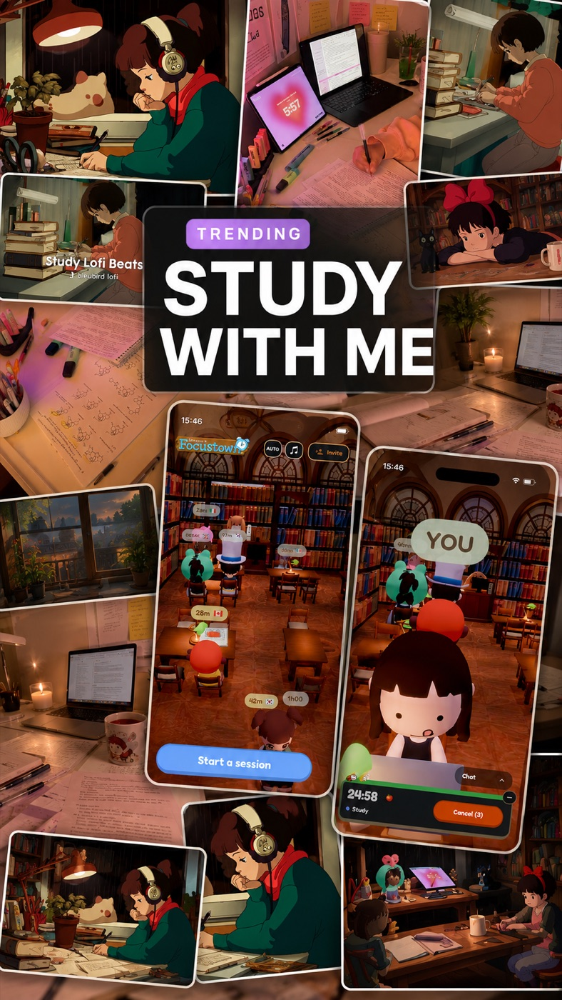
Why study rooms · A trend, not a guess
“Learn with me” was already how students studied.
Our EdTech marketing agent flagged it: study-with-me streams were trending on TikTok and Instagram — students working alongside strangers for company and accountability. We built that feeling into the app.
41.7B#studywithme views on TikTok, Sep 2026
40,000people in Lofi Girl's study stream at any moment, around the clock
750K+downloads of Focustown, a study-with-friends timer, in 7 months
~$30K/moest. Focustown revenue — Pro at $9.99/mo, 4.8★ from 6K ratings
Studying alongside peers lowers test anxiety and raises self-efficacy — Frontiers in Psychology, 2025.
Layer two is about staying. Three things: study rooms for company while you work, flashcards for daily memory, and mock tests for exams. [hover a card] Each of them is performing well, but the first one is the one I want to spend time on. Flashcards, for example — students who build a deck in their first week retain eleven percent better.Mock tests: sessions go up thirty-eight percent in exam weeks, and those users convert to Pro at twice the rate.And study rooms — students who join one spend twenty-eight percent longer in the app, and our most focused student sat in a room for five and a half hours straight.[click Study rooms]
You might be wondering — why would we build this feature? It started as a signal from our marketing AI agent: "study with me" was already a huge trend. It's over forty billion views on TikTok, and Lofi Girl's study stream has something like forty thousand people in it at any given moment. And it's commercial too — there's a new study-with-friends app called Focustown, and it's already making around thirty K a month. So we built that feeling into the app, and students have really taken to it — average time in the app went up noticeably for students who join rooms, and our most active student sat in a room and focused for five and a half hours straight.
Layer 02 · Stay · The strategy
Nobody opens an app to study.
We had built a Study Hub before. The clicks never came — asking students to go somewhere
to study asks for motivation they don't have at that moment.
So the entries moved to where the traffic already is: right after the answer.
Tap the Ask AI screen →
Study Hub 截图位 the hub nobody opened
Study Hub · clicks stayed flat
Frame 1 concept → flashcards
Frame 2 exam → mock exercise
Frame 3 staying → study room
So layer two really came down to one question: not which study features to build, but why anyone would ever start using them. We had built a Study Hub before — a place to go and study. The clicks never came, because opening it asks for motivation a student doesn't have when they're stuck on one problem at eleven at night. [tap the Ask AI screen] So instead of a destination, the entries moved to where the traffic already is — right after the answer. Once a problem is explained, we read what they need: if the concept is worth keeping, it becomes flashcards; if they've just covered this material or mention an exam, we offer a mock exercise; if they say they're staying to work, we open a study room. Same features. Different moment.
Layer 03 · Reach
Break the sameness.
Every competitor looked the same, and our old mascots read young — cute, childish, tool-like. Nothing a high-schooler would keep on their phone.
A cast that feels like a school.
Three tutors with real personalities, grown out of the Answer.AI logo. Their voice carries into how each AI tutor talks, so the app feels like a place students belong.
After
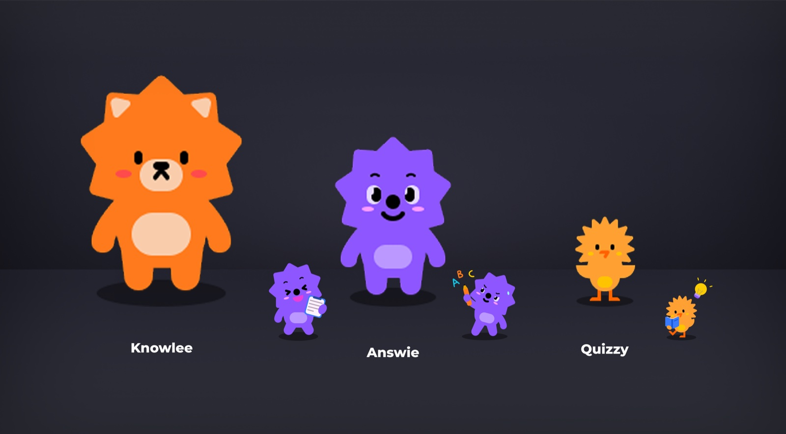
Before
<>
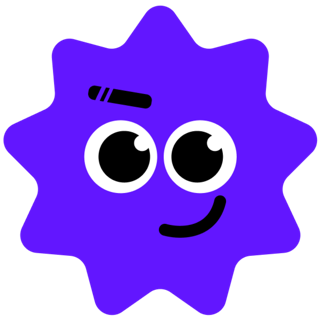
Ace · AI TutorThe playful genius you'd buy a snack for.
Chat skill · how Ace talks
Playful, quickOne step at a timeCelebrates small wins
Nice — you got the slope. One more: what's b when x = 0? 👀
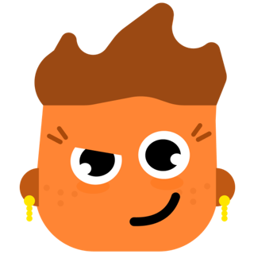
Alma · AI CounselorThe warm counselor who asks how you're doing.
Chat skill · how Alma talks
Warm, unhurriedAsks before advisingOne next step
How did the calc test feel? Whenever you're ready, we can look at UT Austin together.
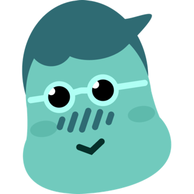
Grant · Scholarship advisorThe quiet advisor who's great with numbers.
Chat skill · how Grant talks
Calm, preciseNumbers firstFollows up on dates
Two scholarships close March 1. The larger one needs one essay — start there.
Layer three is reach. The problem here was that every competitor looked the same, and our own mascots were young — cute, childish, a bit tool-like. [space]
So I rebuilt the IP as a set of characters that make the app feel like a school: Ace the tutor, Alma the counselor, and Grant the scholarship advisor. [drag the slider] And their personalities aren't just visual — [hover a card] I wrote a chat skill for each of them that defines how they talk to students. That's when the app starts to feel like a place students belong, rather than a tool they use.
Layer 04 · Personal
Streaks, nudges, and a school that knows you.
Step 1Collect data
Ace, Alma and Grant learn each student’s goals, strengths and progress. Every conversation and scanned problem adds to a shared student profile.
14% → 71%profile completion: self-filled Me page vs. auto-filled from tutor chats
4 → 12facts we know per active student — goals, classes, weak topics, deadlines
Step 2Act with the data
They use that context to act first — checking in after a tough question, previewing tomorrow’s class, or connecting students with the right support.
3% → 12%tap-through on messages: generic reminders vs. personalized notes from a tutor
+22%next-day return for students who received a proactive message
Hover a step for the numbers
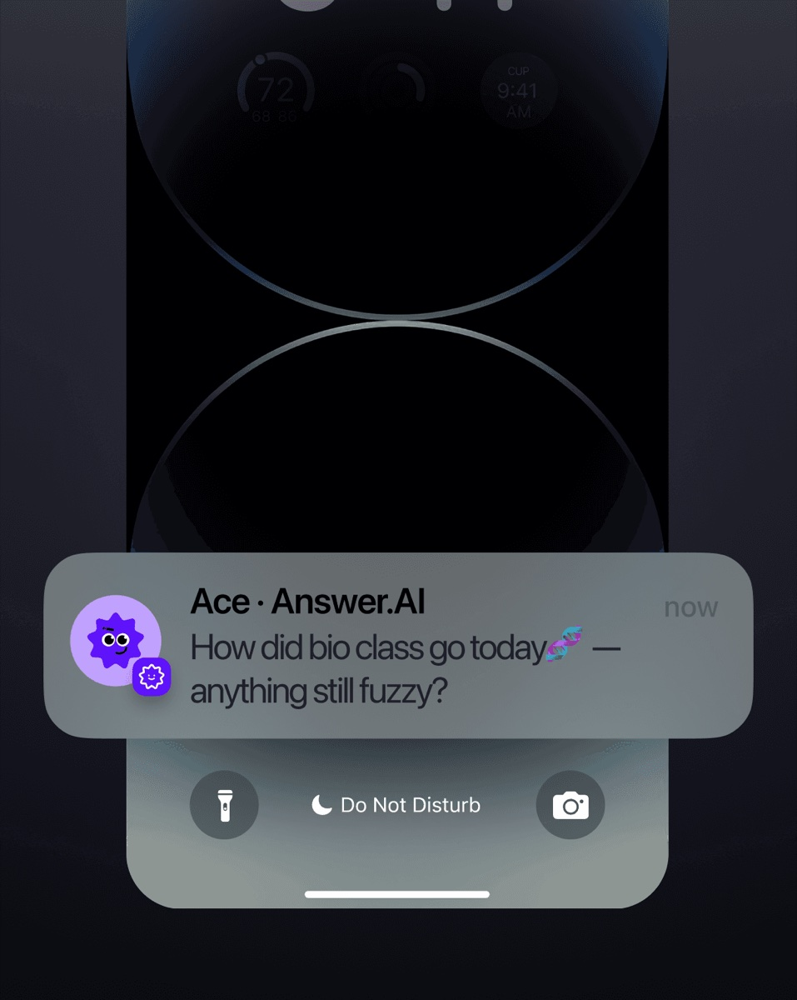
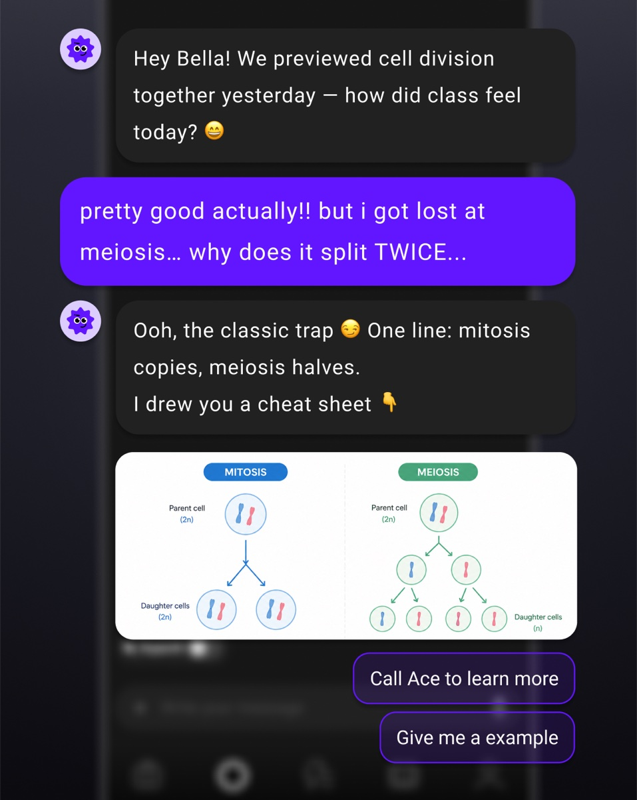
Proactive previewTomorrow’s class, tonight’s heads-up from Ace.
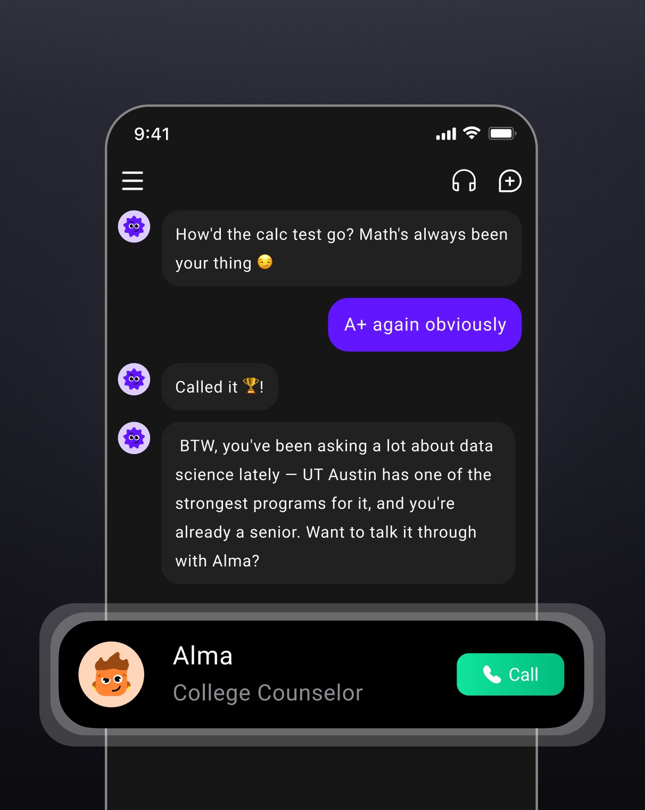
A call with AlmaStrong in a subject? Ace books a college-planning call.
A light reward system keeps it going: scanning problems, mastering topics and finishing Ace’s exercises earn badges — plus random outfit drops for an avatar. The avatar matters because of where it shows up: the study room, where other students can see it. Rewards you wear in front of someone work differently from rewards you collect alone.
+19%7-day streak rate after badges launched
2.3×tasks finished per week by students who dress their avatar
36%of daily actives claimed an outfit drop in month one
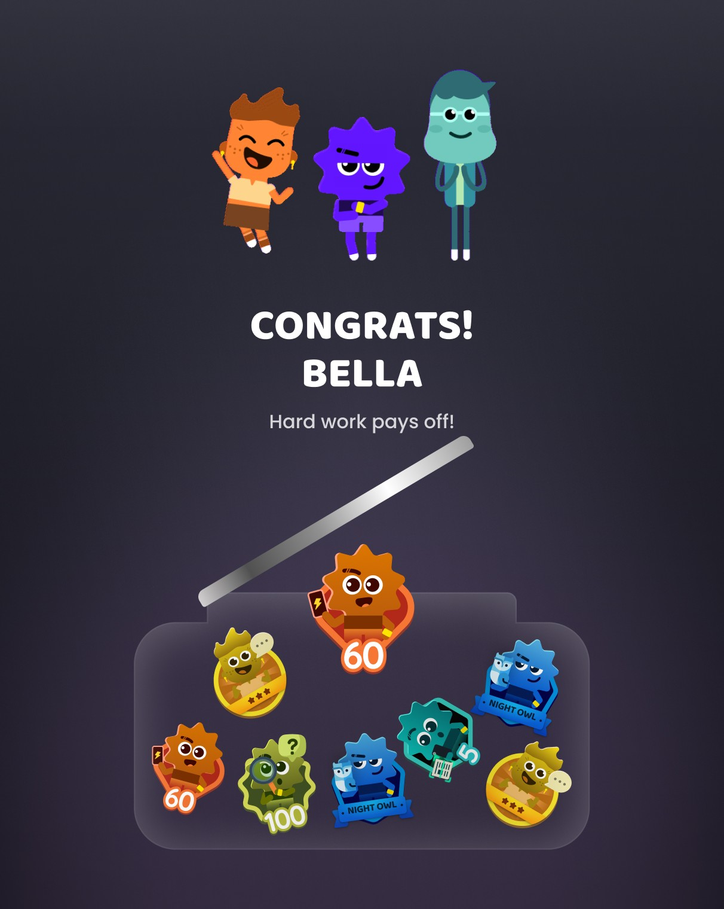
Badges to avatarTasks earn badges — badges dress the study-room avatar.
And layer four is personal. To make anything personal, we first had to actually know the student — so step one is collecting their data. Before, we asked students to fill in a Me page themselves, and almost nobody did. Now the tutors pick it up naturally from conversation: what they're studying, what they're struggling with, what they're aiming for.[hover step 1]And once we know them, step two is acting on it — a check-in after a hard question, a preview the night before class, or a call with Alma when it's time to plan for college.[hover step 2] And personal messages get tapped about four times more than generic reminders. [space → tab 2]
And on top of that, we added a small incentive system — badges and an avatar — just to help students feel like this is their own personal school, not a tool they use.
A takeaway
Interviews are polite. Behaviour is honest.
We tested AP prep and a set of specialist agents. Every interview was glowing — useful, they'd
use it weekly. Behaviour said otherwise, and those bets moved down the roadmap.
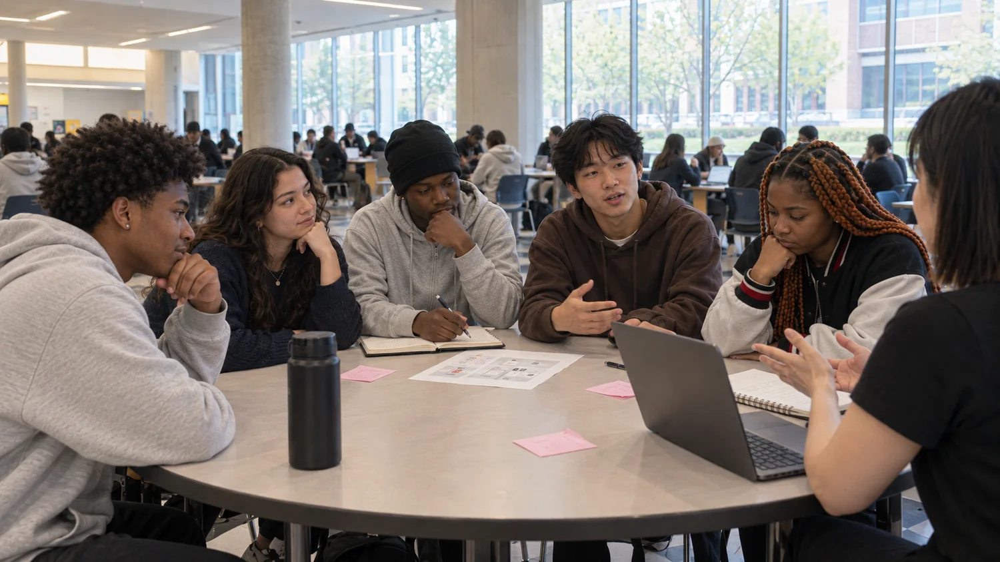
Interviews answer why. Data answers whether.
Ask in an interview
Context — what their day actually looks like
Workarounds — what they built to get around us
Language — the words they use for it
Emotion — what they're proud of, what embarrasses them
The why behind a number — why the funnel drops
Read in the data
Demand — a fake door beats ten interviews
Scale — how many, how often
Winner — which version actually wins
Willingness — what they pay for
Impact — whether the change moved anything
Ask what they did last week, not what they'd do next month.
One takeaway from this project. We tested AP prep and a set of specialist agents, and every interview was glowing — useful, they'd use it weekly. Behaviour said otherwise, and those bets moved down the roadmap. [space]
What I took from it isn't "don't do research" — it's that the two answer different questions. Interviews answer why. Data answers whether. So I use interviews for context, for the workarounds people invent, for the words they use, for where the emotion is. And when the question is "should we build this at all", I'd rather spend a day on a fake door than a week on interviews. Ask what they did last week, not what they'd do next month.
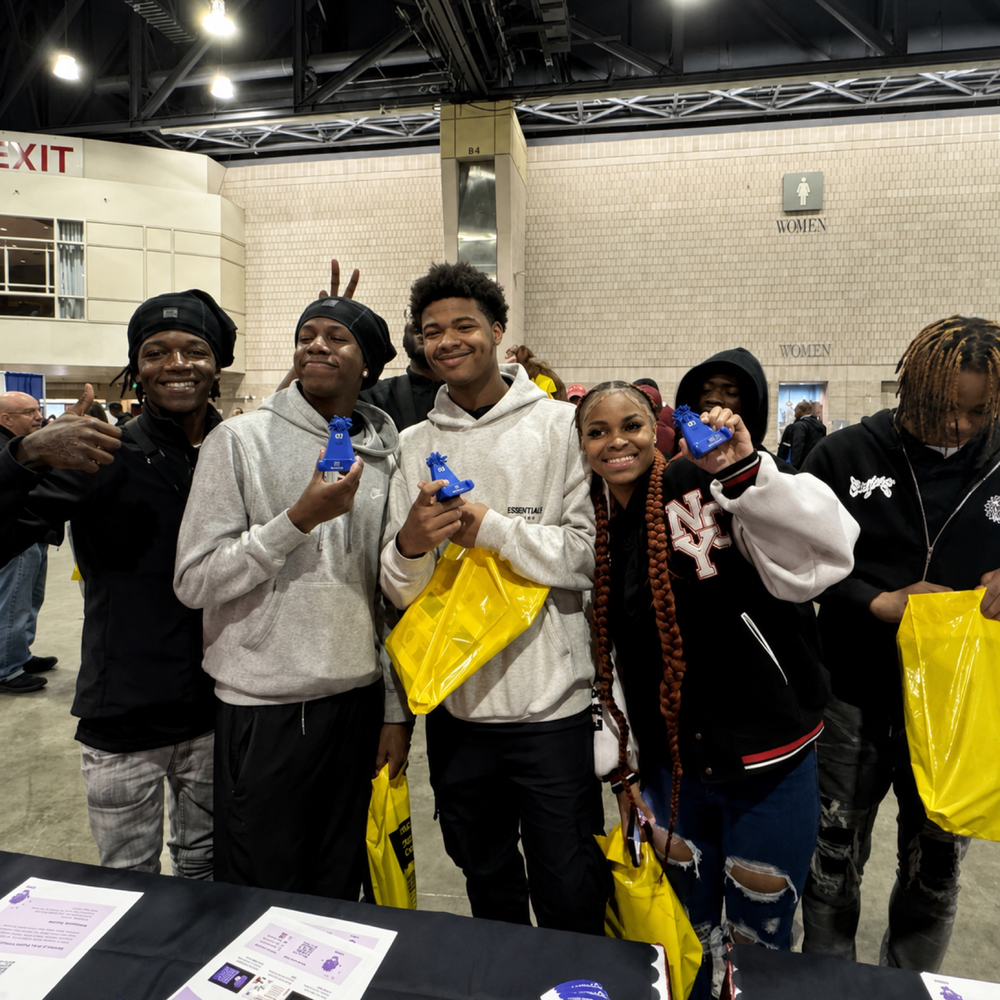
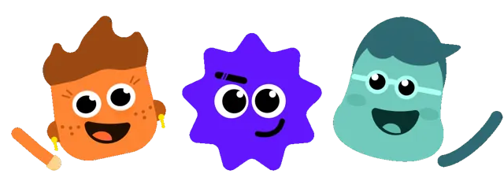
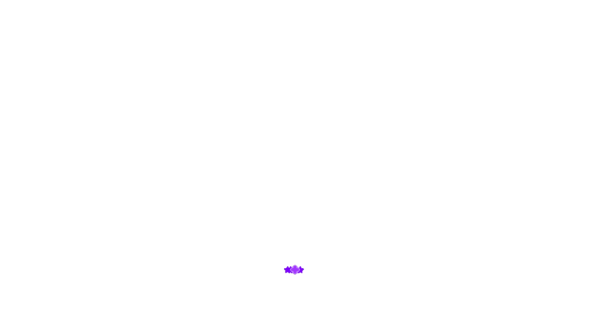
Results
Goal, met.
We set out to move from solving one question to supporting how students learn every day.
After
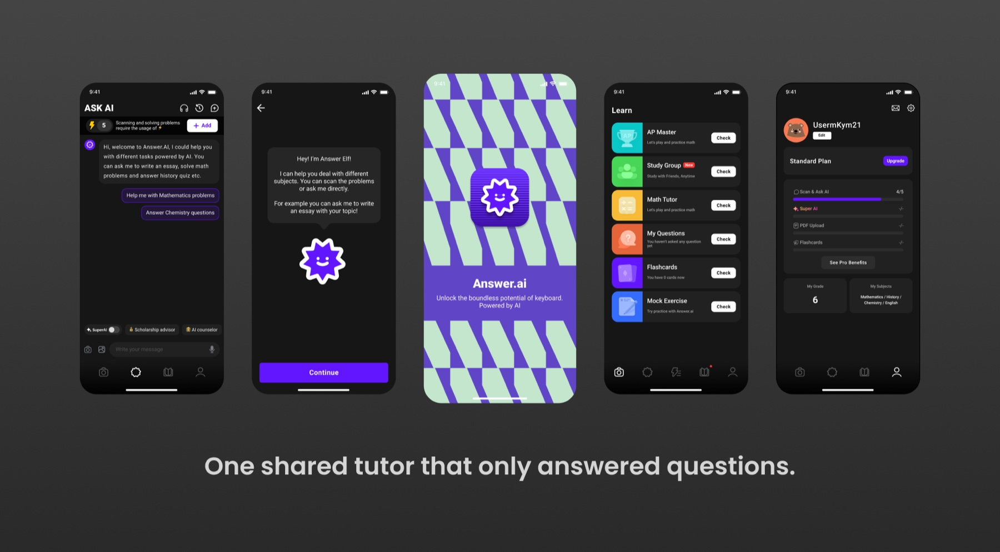
Before
<>
~8%
Lift in 30-day retention
+13%
Daily active users
+23%
Daily revenue
~1M
New registered students
The wrap
Grateful, and onward.
Design had a seat at the table from strategy through shipping. That kind of trust is rare, and I’m deeply grateful to the team who made it possible.
What will stay with me most are the students we met at campus events — pulling up their report cards and telling us that we had helped.
That’s the part I’ll always carry with me. ❤️
So after these four layers, we hit the goal. [space / drag]
We went from one shared tutor that only answered questions, to a personalized school that grows with each student. [space]
Thirty-day retention up about eight percent, daily actives up thirteen, daily revenue up twenty-three, and about a million new students. [space]
On this project, design was deeply involved from strategy all the way through shipping. I've moved on to other projects since, but I'm still really grateful for this experience with the Answer.AI app. And the thing that stays with me most is the students at campus events, pulling up their report cards to show us how their grades had improved with our product. So that's the story of how we got Answer.AI growing again.
Growth came from making a tool feel like
a place that knows you.